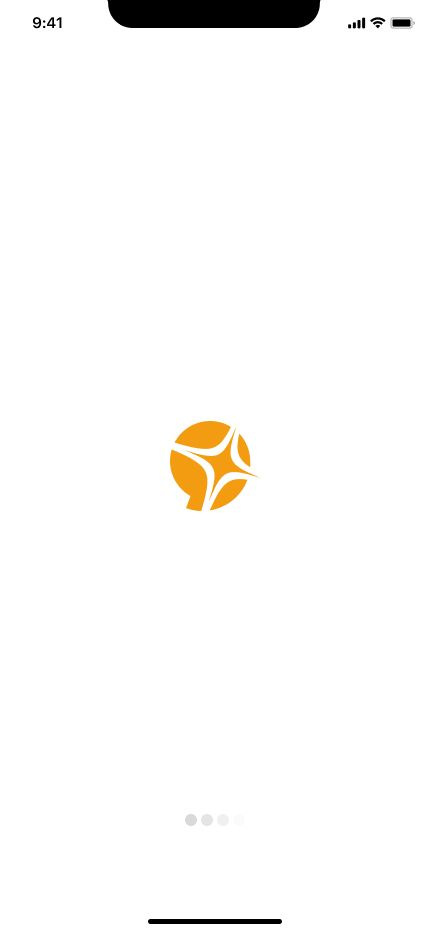
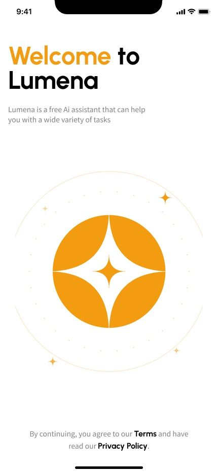
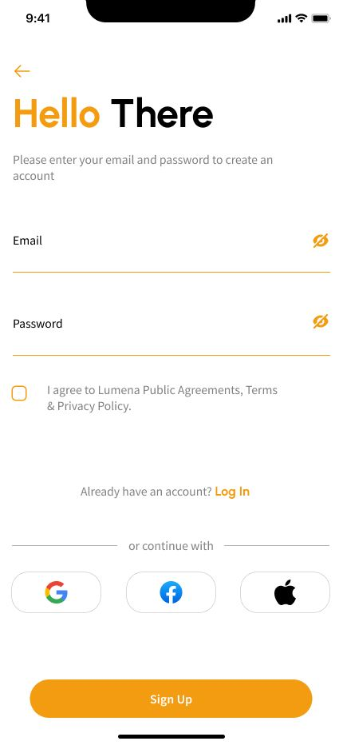
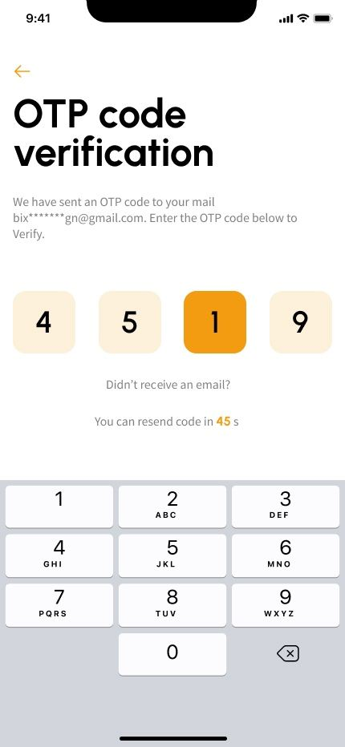
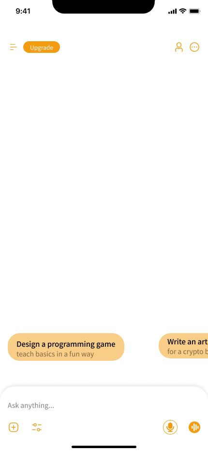
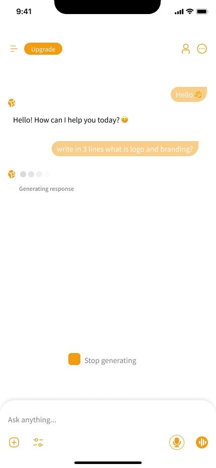
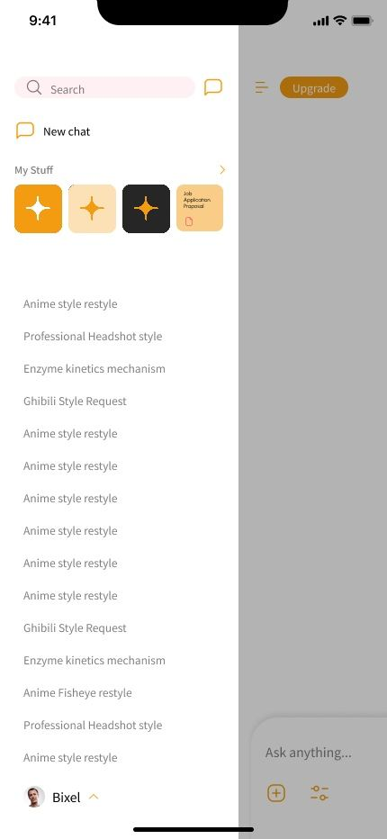
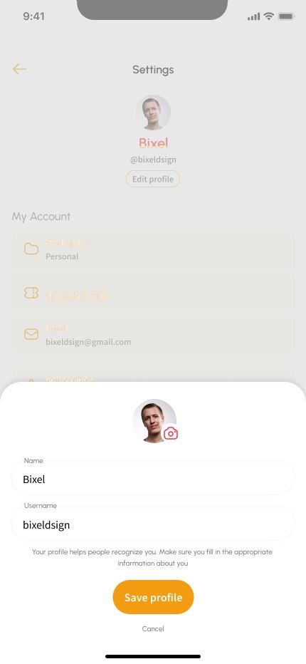
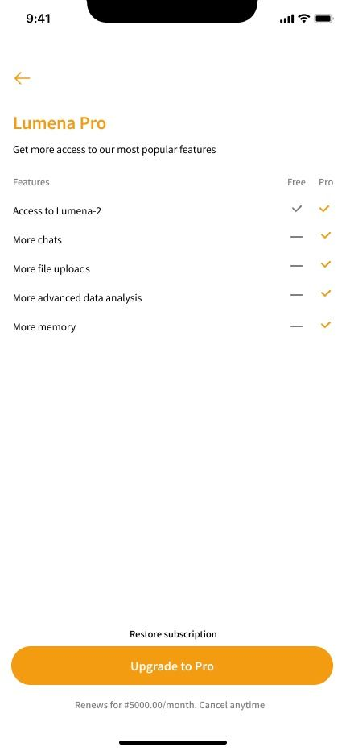
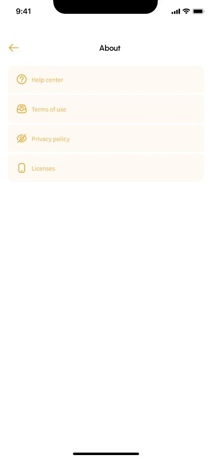

Suggested prompts, not a tutorial
An onboarding walkthrough gets dismissed. Tappable example prompts teach the same thing by letting someone succeed once, immediately, without reading anything.
An AI assistant whose audience included people opening a tool like this for the first time. The interface had to teach without a tutorial.
Assistant apps assume you already know what to type. For a first-time user, the empty input field is the entire product and it explains nothing. Lumena's brief covered a logo and a set of screens; the harder problem was making an unfamiliar product feel ordinary.
An empty chat screen is the least instructive interface in software. It offers infinite possibility and no direction, and users who have never met the format simply close it.
The product is free with a paid tier, so the upgrade path had to stay visible on every screen without turning the interface into an advertisement.
Every screen was designed in its real states — empty, filled, loading, interrupted, error — rather than only the version that photographs well. That produced nineteen screens instead of six, and made the handover possible without a second round of design.
One accent colour, one radius language, one icon weight throughout, so the only thing competing for attention is the user's own content.
An onboarding walkthrough gets dismissed. Tappable example prompts teach the same thing by letting someone succeed once, immediately, without reading anything.
It costs visual calm on an otherwise quiet home screen. The alternative was burying it in settings, where subscription products reliably fail to convert. The pill is small and never blocks content.
An inline code field is more compact. On unreliable mobile networks the delayed email is the common case, so the resend timer needed room rather than being hidden behind a tap.









